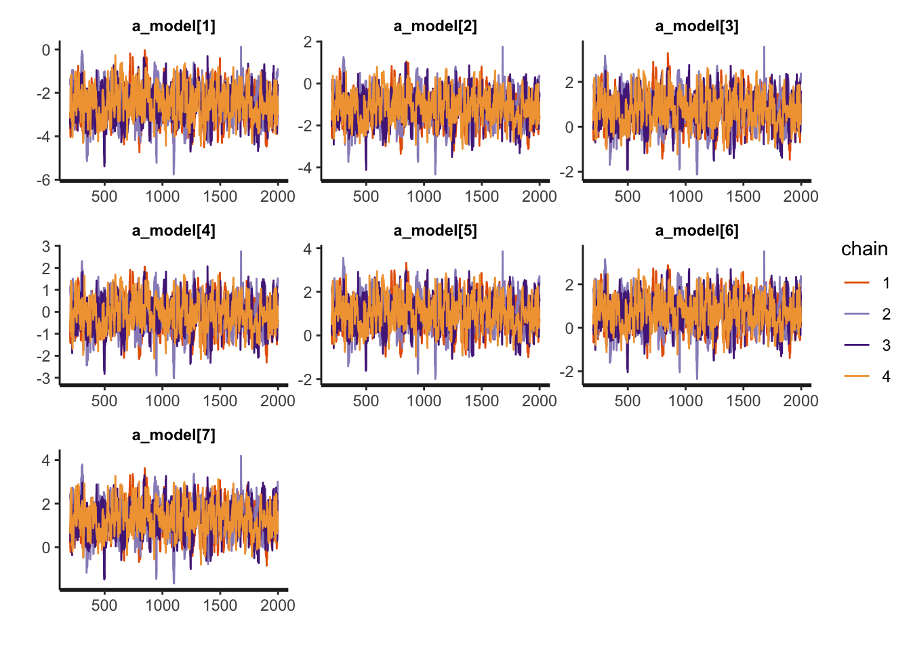
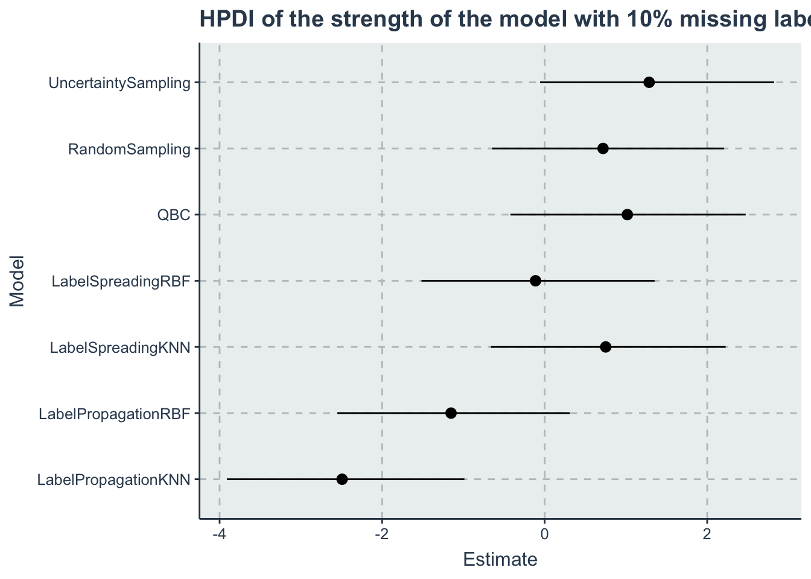

Chapter 3 Results for 10%
m10_fit <-readRDS("./data/m10_fit.RDS")
a_model <- c("a_model[1]",
"a_model[2]",
"a_model[3]",
"a_model[4]",
"a_model[5]",
"a_model[6]",
"a_model[7]")
rstan::traceplot(m10_fit, pars=a_model)
hpdi <- get_HPDI_from_stanfit(m10_fit)
hpdi_algorithm <- hpdi %>%
dplyr::filter(str_detect(Parameter, "a_model\\[")) %>%
dplyr::mutate(Parameter=models)
p<-ggplot(data=hpdi_algorithm, aes(x=Parameter))+
geom_pointrange(aes(
ymin=HPDI.lower,
ymax=HPDI.higher,
y=Mean))+
labs(y="Estimate", x="Model", title = "HPDI of the strength of the model with 10% missing labels")+
coord_flip()
p
Here we are extracting all samples and ranking them to have a distribution of the ranks
posterior <- rstan::extract(m10_fit)
a_model <- as_tibble(posterior$a_model)
colnames(a_model) <- models
#sampling from the posterior
s <- dplyr::sample_n(a_model, size = 1000, replace=T)
s <- dplyr::mutate(s, rown = row_number())
wide_s <- tidyr::pivot_longer(s, cols=all_of(models), names_to = "Models", values_to = "a_model")
rank_df <- wide_s %>%
dplyr::group_by(rown) %>%
dplyr::mutate(Rank = rank(-a_model, ties.method = 'random')) %>%
dplyr::ungroup() %>%
dplyr::select(-a_model) %>%
dplyr::group_by(Models) %>%
dplyr::summarise(MedianRank = median(Rank),
VarianceRank = var(Rank)) %>%
dplyr::arrange(MedianRank)rank_df_table <- rank_df
colnames(rank_df_table) <- c("Models","Median Rank", "Variance of the Rank")
kable(rank_df_table, "html") %>%
kable_styling(bootstrap_options = c('striped',"hover", "condensed" ))| Models | Median Rank | Variance of the Rank |
|---|---|---|
| UncertaintySampling | 1 | 0.0529169 |
| QBC | 2 | 0.1585335 |
| LabelSpreadingKNN | 3 | 0.3136727 |
| RandomSampling | 4 | 0.3080040 |
| LabelSpreadingRBF | 5 | 0.0000000 |
| LabelPropagationRBF | 6 | 0.0000000 |
| LabelPropagationKNN | 7 | 0.0000000 |
saving the table to latex
rank_df_table %>%
kable(
"latex",
table.envir = 'table',
caption='Ranking of the algorithms with 10% missing lables',
booktabs=T,
label='ranking10',
format.args = list(scientific = FALSE),
digits = 3,
linesep = "") %>%
kable_styling(latex_options = c("hold_position"),
full_width = F) %>%
readr::write_lines('./paper/ranking10')